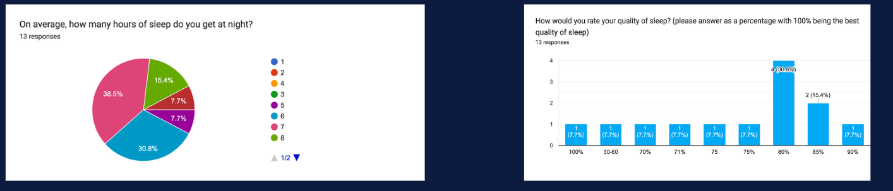
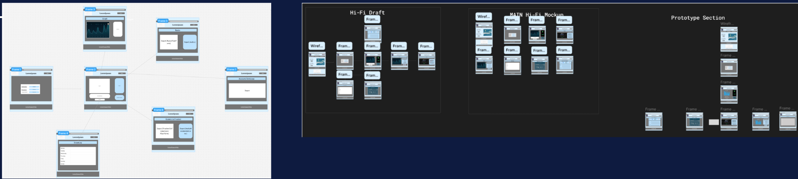
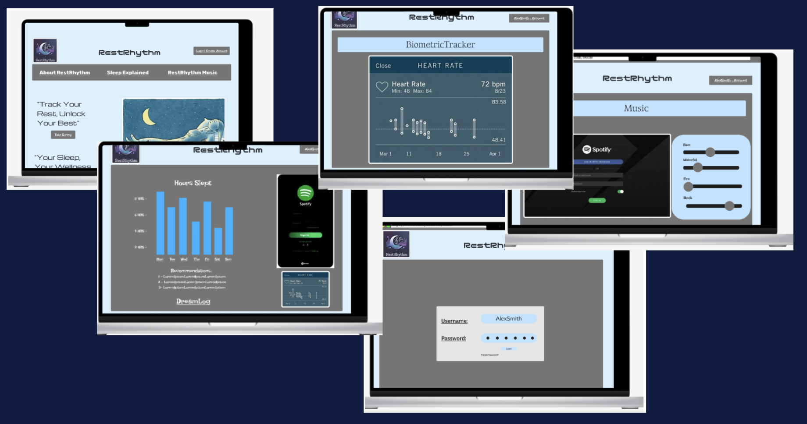
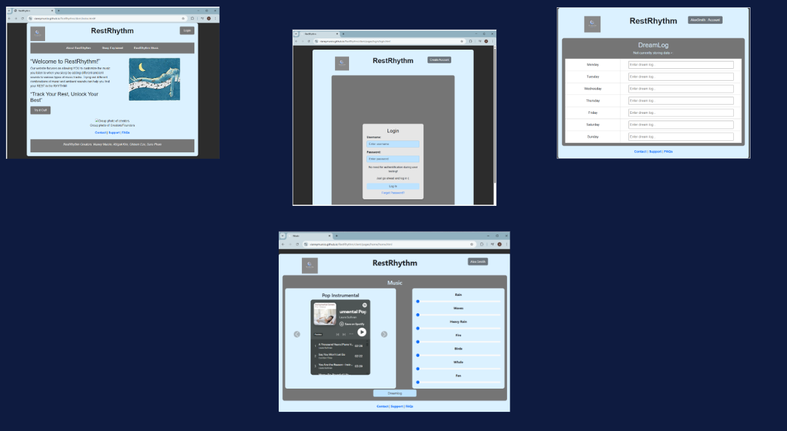

The Problem
We first identified the problem: young adults (aged 18-30) don’t get enough good quality sleep.
Our preliminary data collection, showed that around 46.1% of participants were getting less than 7 hours of sleep at night on average. Some individuals were getting as little as 2 hours of sleep! On top of this, a large majority of the surveyors were achieving a sleep quality of 80% or less. This made it clear that we needed to find a solution to help young adults sleep better at night.
On top of this data collection, we researched articles on sleep and music to see what research has shown so far. There seems to be an overall correlation between better sleep and music. This changes for every individual but music could be the solution for sleep deprived individuals.
Figma Mockups
The iteration process began with a brainstorm of elements we wanted to incorporate into our website. The biggest thing we came up with was the use of both music and ambient noises to allow users to customize their sleeping environment. We researched some of the better colors to help with sleeping such as red, purple, and blue. Specifically, blue seemed to be the best overall pick. We took this and ran with it. Using figma, we created a low fidelity and high fidelity mockup to give us a sense of where we wanted to go. The design was kept simple and sleek for easy use and less distractions.
Figma Interactive Prototypes
Coded Prototypes
Adjusting Based on User Feedback
User feedback on the first coded prototype indicated that users did not like how hard the light blue was on the eyes. We wanted to keep the blue color but make it easier for users to use especially in the dark. We also decided to make the boxes larger for the dreamlog. We added a page to show how the dream log would be viewed. Certain elements are not completely functional due to the limitations of our group’s ability to code a database.
Users were surveyed using a google form due to time constraints and overnight use requirement.